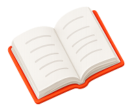

FEATURED
우리아이북을 영상으로 만나보세요.
현재 프로젝트에 포함된 공식 소개 영상을 이곳에서 확인할 수 있습니다. 새로운 보도와 행사 소식은 공개되는 순서에 따라 아카이브에 추가됩니다.
새 미디어 콘텐츠의 제목·날짜·외부 링크는 확인된 정보가 제공된 후 게시됩니다.
NEWSROOM
미디어, 서비스, 교육 현장에서 이어지는 이야기를 차곡차곡 기록합니다.

FEATURED
현재 프로젝트에 포함된 공식 소개 영상을 이곳에서 확인할 수 있습니다. 새로운 보도와 행사 소식은 공개되는 순서에 따라 아카이브에 추가됩니다.
ARCHIVE
콘텐츠 유형을 선택해 확인할 수 있습니다. 현재 확인 가능한 자산 외의 기사나 도입 사례는 임의로 만들지 않았습니다.
AI 교육과 Ownabee의 경험을 소개하는 영상을 확인해 보세요.
공식 공지와 서비스 업데이트 정보가 확인되는 대로 이곳에 게시됩니다.
확인된 학교·학원·기관 도입 사례만 공개합니다.
선택한 분류의 공개 콘텐츠를 준비하고 있습니다.
협업, 보도, 도입 문의는 고객지원 채널을 통해 남겨 주세요.
문의하기